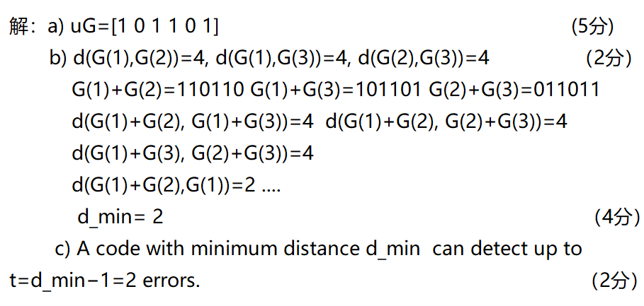
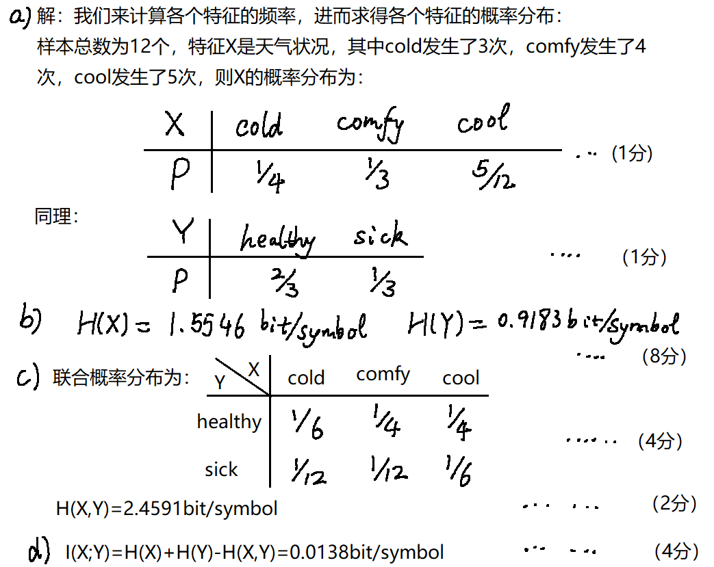
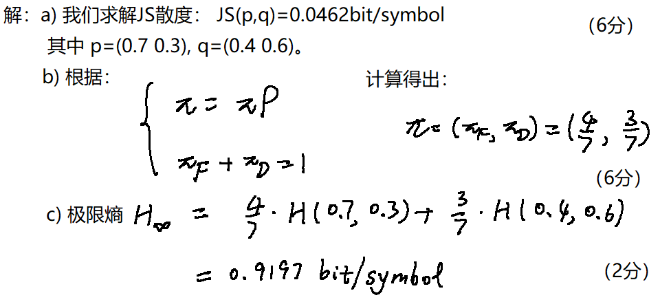
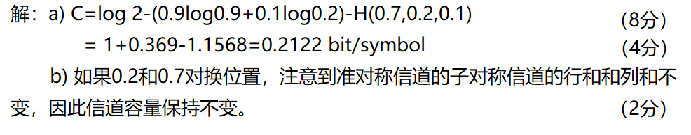
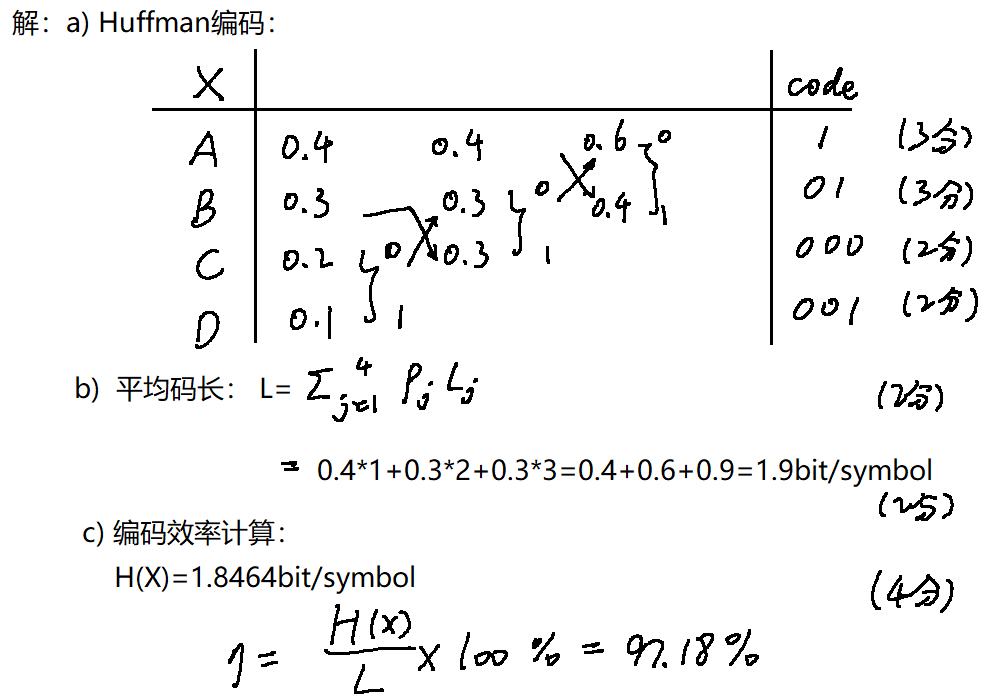

说明 / Note: 本页依据
复习题-2026 2.docx与信息论复习题满分复习文档.md整理。原docx中一部分题干公式是WMF图片，无法直接提取为可编辑公式；这部分已尽量按现有答案与上下文重排。极少数无法可靠恢复的题干图形，会保留“原卷图示见下”或“按原卷矩阵”说明。
Unless otherwise stated, all logarithms are base 2 and all entropy quantities are measured inbit/symbol.
EN. For the entropy of a single-symbol discrete
source and the entropy of its N-th extension, which
statement is correct?
中. 对于单符号离散信源的熵与其 N
次扩展信源的熵，哪一个关系正确？
Recoverable relation / 可恢复的正确关系
Source note / 原卷说明
The option formulas in the original docx were embedded
as image-only equations.
原卷选项公式为图片化公式，这里保留其正确关系。
Correct choice / 正确答案: B
EN. For a discrete memoryless source, the entropy of
the N-th extension is N times the
single-symbol entropy.
中. 对离散无记忆信源，N
次扩展信源的熵等于单符号熵的 N 倍。
EN. What is right in the following statement?
A. The average mutual information can be negative.
B. The mutual information can be negative in certain
condition.
C. For the entropy of certain source, it can increase to
infinity.
D. The channel capacity must be larger than any rate
distortion function.
中. 下列说法哪个正确？
A. 平均互信息可以为负。
B. 互信息在某些条件下可以为负。
C. 某个信源的熵可以增大到无穷。
D. 信道容量一定大于任意率失真函数。
Correct choice / 正确答案: B
EN. In this review sheet, “mutual information” refers to pointwise mutual information. Pointwise mutual information may be negative, while average mutual information is always non-negative.
中. 这道题里的 mutual information
指单个事件互信息，也就是点互信息。点互信息可以为负，但平均互信息一定非负。
EN. The ultimate entropy satisfies which statement?
中. 极限熵满足下列哪个说法？
Recoverable meaning / 可恢复题意
The question asks about the relation between limiting entropy and
finite-order entropies.
本题考查极限熵与各阶平均符号熵之间的关系。
Correct choice / 正确答案: A
EN. The limiting entropy is not greater than any finite-order average symbol entropy.
中. 极限熵不大于任意有限阶平均符号熵。
a) EN. The components for the Shannon communication
system include ______, ______ and ______.
a) 中. Shannon 通信系统的组成包括 ______、______ 和
______。
b) EN. As the probability of a certain event
increases, its self-information would ______.
b) 中. 当某事件概率增大时，它的自信息会 ______。
c) EN. For the rate-distortion function,
R(D_min)=______, while R(D_max)=______.
c) 中. 对率失真函数，有
R(D_min)=______，而 R(D_max)=______。
d) EN. For the channel capacity C from
source X to destination Y, the range for
C should be among ______ and ______.
d) 中. 对从信源 X 到信宿 Y
的信道容量 C，其范围应在 ______ 与 ______ 之间。
a) source, channel, destination
中. 信源，信道，信宿
b) decrease
中. 减小
c)
d)
EN. Assume the probability space of one discrete memoryless source is
and the noisy channel transition matrix is
Calculate:
I(a_1) and I(a_2)H(X)H(Y)H(X,Y)I(X;Y)中. 设某离散无记忆信源满足
其经过噪声信道后的转移矩阵为
求：
I(a_1) 和 I(a_2)H(X)H(Y)H(X,Y)I(X;Y)Self-information / 自信息
Source entropy / 信源熵
Marginal distribution of Y / Y
的边缘分布
Entropy of Y / Y 的熵
Joint distribution / 联合分布
Joint entropy / 联合熵
Average mutual information / 平均互信息
Note / 说明
The original handwritten line had a typo in the last formula; the
correct relation is I(X;Y)=H(X)+H(Y)-H(X,Y).
原卷最后一行公式存在笔误，正确公式应为
I(X;Y)=H(X)+H(Y)-H(X,Y)。
EN. There exists a binary 2-step Markov chain with
source symbol set {0,1} and transition probabilities
Please:
0 and
1.中. 设有一个二元二阶 Markov 链，符号集为
{0,1}，转移概率为
求：
0 与 1 的极限分布。State definition / 状态定义
State transition description / 状态转移写法
00→00 with probability 0.6,
00→01 with probability 0.4
01→10 with probability 0.5, 01→11
with probability 0.5
10→00 with probability 0.5, 10→01
with probability 0.5
11→10 with probability 0.4, 11→11
with probability 0.6
Transition matrix / 转移矩阵
Stationary distribution / 平稳分布
Let w=(w_1,w_2,w_3,w_4) for states
(00,01,10,11). Then
Solving gives
Limiting symbol distribution / 极限符号分布
so
EN. The limiting distribution of symbols is
(1/2,1/2).
中. 符号的极限分布为 (1/2,1/2)。
EN. For channel A and channel
B in the original review sheet:
A and
B;For channel A, the recoverable symmetric row
distribution is
One standard symmetric realization is
The exact matrix for channel B in the source
docx was embedded as an image-only formula and cannot be
recovered reliably as editable math, but its type and capacity are
preserved in the answer.
中. 对原复习题中的信道 A 与
B：
A 与 B 的信道类型；其中 A 信道可恢复出的对称行分布为
可写成一个标准对称矩阵
原卷 B
信道矩阵是图片化公式，无法可靠恢复为可编辑数学，但其类型和标准答案可以保留。
Channel types / 信道类型
A: symmetric channel / 对称信道
B: quasi-symmetric channel / 准对称信道
Capacity of A / A
的容量
Capacity of B / B
的容量
The review sheet gives the quasi-symmetric decomposition constants
Using the capacity expression from the sheet,
EN. Channel B is quasi-symmetric, and
its capacity is 0.126 bit/symbol.
中. B 为准对称信道，其容量为
0.126 bit/symbol。
EN. For a DMS with probability distribution
please:
中. 对概率分布为
的离散无记忆信源，求：
Shannon-Fano code / Shannon-Fano 码
Huffman code / Huffman 码
Average lengths / 平均码长
Source entropy / 信源熵
Coding efficiency / 编码效率
EN. Both codes have the same average code length
2.2 bit/symbol, and the coding efficiency is about
96.45%.
中. 两种编码平均码长相同，均为
2.2 bit/symbol，编码效率约为 96.45%。
(6,3) 线性分组码EN. Let the generator matrix of a (6,3)
linear block code be
Please:
M=(100),H,(101111) and the error weight
is less than 2, determine the transmitted LBC code.中. 设 (6,3) 线性分组码的生成矩阵为
求：
M=(100) 的码字，H，(101111)，且错误图样码重小于
2，求发送的线性分组码码字。Encoding / 编码
Parity-check matrix / 监督矩阵
Since
we have
Syndrome decoding / 伴随式译码
This syndrome equals the 4th column of H, so the error
pattern is
Hence the transmitted codeword is
EN. The transmitted LBC code is
(101011).
中. 发送的线性分组码码字为 (101011)。
(6,3) Linear Block Coding Problem / 另一道
(6,3) 线性分组码题EN. Consider another (6,3) linear block
coding problem from the review sheet. The original figure is preserved
below.
中. 下面这道题是原卷中的另一道 (6,3)
线性分组码题，原题图示保留下来如下。

The problem asks:
u=[101] into a codeword,Codeword / 码字
Distance conclusion / 距离结论
The review sheet gives
Detection ability / 检错能力
EN. A code with minimum distance 2 can
detect at most 1 error.
中. 最小距离为 2 的码最多可检测
1 位错误。
Note / 说明
One handwritten note on the sheet conflicts with the formula. The
defensible exam answer is the formula-based result above.
原卷手写批注中有一处与公式不一致；考试时应按标准公式给出上面的结果。
EN. The source X is the weather
condition with states {cold, comfy, cool}, and the
destination Y is the health state
{healthy, sick}. The original sample table from the review
sheet is shown below.
中. 信源 X 表示天气状态
{cold, comfy, cool}，信宿 Y 表示健康状态
{healthy, sick}。原题给出的样本表如下。

Please calculate:
X and
Y,H(X) and H(Y),H(X,Y),I(X;Y).Marginal distributions / 边缘分布
Entropies / 熵
Joint distribution / 联合分布
| cold | comfy | cool | |
|---|---|---|---|
| healthy | 1/6 | 1/4 | 1/4 |
| sick | 1/12 | 1/12 | 1/6 |
Mutual information / 互信息
EN. The dependence between weather and health is
very weak in this sample.
中. 从该样本看，天气与健康之间的相关性非常弱。
EN. A student’s study habits follow a Markov chain
with two states: Focused (F) and
Distracted (D). The original figure is shown below.
中. 某学生的学习习惯服从一个两状态 Markov 链，状态为
Focused (F) 与
Distracted (D)。原题图示如下。

The recoverable transition matrix is
Please:
(0.7,0.3)
and (0.4,0.6),JS divergence / JS 散度
Stationary distribution / 平稳分布
Let \pi=(\pi_F,\pi_D). Then
which gives
Limiting entropy / 极限熵
EN. The stationary distribution is
(4/7, 3/7) and the limiting entropy is
0.9199 bit/symbol.
中. 平稳分布为 (4/7, 3/7)，极限熵为
0.9199 bit/symbol。
EN. A medical AI system classifies chest X-ray
images into three categories: Healthy (H),
Pneumonia (P), and Uncertain (U). The original
figure is shown below.
中. 一个医疗 AI 系统将胸片分为
Healthy (H)、Pneumonia (P) 和
Uncertain (U) 三类。原题图示如下。

Please:
C,0.2 and 0.7
changes the capacity.Capacity / 容量
The review sheet gives the quasi-symmetric channel computation
Mechanism after swapping 0.2 and
0.7 / 将 0.2 与 0.7
对调后的结论
EN. The capacity remains unchanged, because only the positions of probabilities change, while the quasi-symmetric subchannel structure remains the same.
中. 容量保持不变，因为变化的只是概率位置，准对称子信道的结构不变。
EN. A sensor transmits four types of signals
{A,B,C,D} with probabilities
The original figure is shown below.
中. 某传感器发送四类信号
{A,B,C,D}，其概率分布为
原题图示如下。

Please:
Huffman code / Huffman 码
Average code length / 平均码长
Entropy / 熵
Coding efficiency / 编码效率
EN. The average code length is
1.9 bit/symbol and the coding efficiency is
97.18%.
中. 平均码长为 1.9 bit/symbol，编码效率为
97.18%。